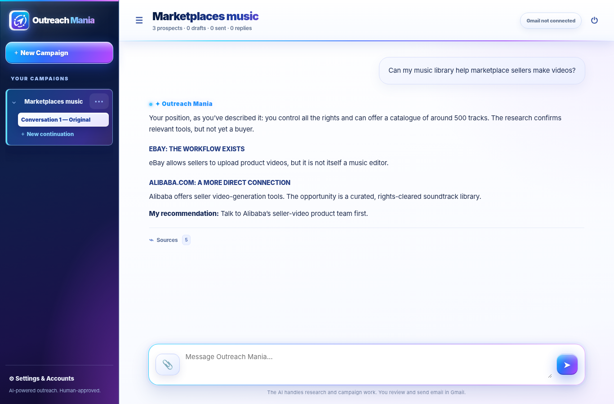

Think it through
Explore an opportunity, sharpen the angle and develop the commercial logic through natural conversation.
Meet the business-development partner that helps you think commercially, investigate opportunities, find prospects and prepare personalised outreach—all in one beautiful workspace.

Outreach Mania follows your lead. Start with an idea or a specific request, and move at your own pace.
Explore an opportunity, sharpen the angle and develop the commercial logic through natural conversation.
Research companies and relevant prospects, with source information available when you need to check it.
Create recipient-focused Gmail drafts on request. You decide what gets sent—and send it from Gmail.
The heart of Outreach Mania is a simple, continuous conversation. Your campaigns, prior decisions, research and replies stay organised around the work you're doing.
Interface capture from v3.15 with demonstration content; v3.16 retains this chat-first presentation.
Develop proposals, explore licensing opportunities, think through partnerships and pressure-test business ideas.
Investigate companies and prospects and inspect useful evidence without flooding the conversation with raw URLs.
Return to a campaign, open a new continuation and keep important decisions and previous work in view.
Prepare and refine drafts for Gmail. You review and send them yourself, keeping control of every approach.
Outreach built around contribution, relevance and mutual value—not generic, high-volume sales scripts.
Use it for partnerships, sponsorship, distribution, licensing, business services and other commercial outreach.
This is an incredible piece of software. It brought our agency leads we could not have gotten otherwise.
I work alone, but with this app it feels like I’m working with a whole department.
You’d better learn to get a lot of replies!
Brings back worthwhile and lasting contacts.
Better outreach starts by understanding what matters to the person receiving it.
Our proprietary methodology helps shape clear, considered introductions. The relationship comes first. The human stays in control.
A one-time desktop software licence. Develop opportunities and work on campaigns without adding another subscription for the app itself.
Separate OpenAI API usage charges apply. A Gmail account and internet connection are needed for connected features.
Single-computer software licence
Checkout is not open until the installers and licence activation are ready.
No. Outreach Mania prepares Gmail drafts when you ask it to. You review them and send them from Gmail.
It's designed as standalone desktop software. AI and Gmail features connect to those external services over the internet; there is no separate Outreach Mania cloud workspace required for the owner QA build.
No. The desktop licence and OpenAI API usage are separate. You supply your own OpenAI API connection.
Yes. You can use it as a conversational commercial thinking partner and ask for research or drafting only when you're ready.
Mac support is planned. Release availability will be announced after installer and platform testing are complete.